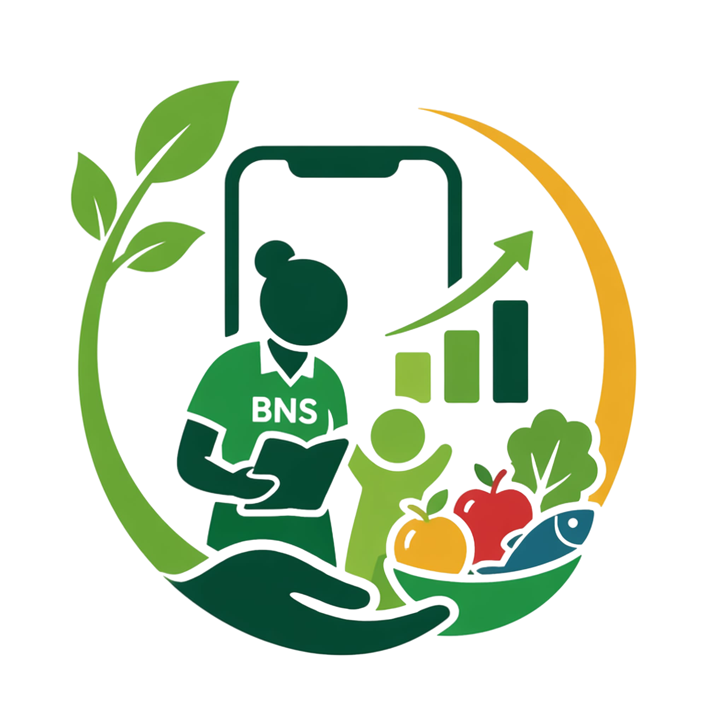

AppScale
Barangay Child Nutrition & Health Information System
Comprehensive User Manual & Operating Guide
An end-to-end operational manual designed for Barangay Nutrition Scholars (BNS),
Barangay Health Workers (BHW), City/Municipal Administrators, and Community Beneficiaries.
Covers the Complete Web Management Portal and the Mobile Field Application.
1. System Overview & Architecture
AppScale is a specialized, dual-platform digital health management system specifically tailored for Philippine barangay local health units, primary health centers, and community nutrition offices. The platform modernizes community nutrition monitoring, child growth tracking (Operation Timbang Plus / OPT+), maternal care counseling, supplementary feeding programs, micronutrient distribution (Vitamin A & Deworming), and clinical referral pathways.
Core System Mission:
AppScale eliminates paper-bound record delays and transcription errors by providing field workers (BNS/BHW) with an offline-first mobile tool, while furnishing local health officials and administrators with centralized web analytics, automated WHO standard z-score evaluations, and regulatory report generation.
🌐 Web Management Portal
Accessible via modern browsers (Chrome, Edge, Firefox). Serves as the central command hub for Municipal Administrators and Barangay Health Workers to manage accounts, generate masterlists, review schedules, and track macro health statistics.
📱 Mobile Field Application
Built with Flutter & Hive offline storage. Empowers BNS and BHW workers to record child growth measurements, feeding attendance, deworming, and maternal visits in remote puroks without active cellular connectivity.
Key Architecture Components
- Frontend Web: React (Vite), Tailwind CSS, Recharts for analytics, Lucide Icons, Responsive Layouts.
- Mobile Application: Flutter with Hive NoSQL embedded local database, offline queueing engine, and background auto-sync.
- Backend API Server: Node.js, Express 5, RESTful JSON API, JWT Token Verification, Express Rate Limiting, Helmet security headers.
- Database Layer: MySQL / Cloud database holding centralized records, child growth histories, audit logs, and account profiles.
- Standards Compliance: Incorporates World Health Organization (WHO) Growth Standards for Weight-for-Age (WFA), Length/Height-for-Age (HFA), and Weight-for-Length/Height (WFL/H).
2. User Roles & Access Hierarchy
To safeguard sensitive patient health data and ensure accountability under the Philippine Data Privacy Act of 2012, AppScale enforces strict Role-Based Access Control (RBAC).
| Role |
Platform |
Primary Responsibilities |
Access Level |
| Super / System Admin |
Web Portal |
System supervision, BHW account provisioning, system-wide masterlist oversight, comprehensive audit log monitoring, official signatory configurations. |
Global Administrative |
| Barangay Health Worker (BHW) |
Web + Mobile |
Barangay-level beneficiary records management, scheduling checkups, filing referrals to rural health units (RHU), reviewing flagged malnutrition cases. |
Barangay Specific |
| Barangay Nutrition Scholar (BNS) |
Mobile App |
Field weight & height measurement entry, feeding program attendance, meal planning, maternal counseling, Vitamin A & Deworming field logs. |
Field & Purok Level |
| Beneficiary / Caregiver |
Mobile App |
Personal child health card access, immunization & deworming schedules, nutrition status tracking, notification alerts from health workers. |
Personal Record Only |
Account Creation Policy:
Public self-registration is strictly disabled for Admin, BHW, and BNS roles. All healthcare staff accounts must be provisioned and authorized by the Municipal/Barangay Administrator to prevent unauthorized access to community medical records.
3. Authentication, Security & Account Policies
AppScale implements multi-layer authentication security to prevent unauthorized access and defend against credential stuffing:
1. Login Credentials & Session Lifespan
- Identifier: Official Registered Email Address.
- Password: Strong alphanumeric password required (minimum 8 characters).
- JWT Session: Generates secure JSON Web Tokens stored in browser memory/encrypted local store, automatically refreshed during active use and invalidated upon logout.
2. Account Lockout & Brute-Force Defense
1
Per-Account Failed Attempt Tracking
Failed login attempts are tracked per account identifier (email) rather than public IP to prevent network-wide lockout in community centers.
2
Lockout Threshold (5 Failed Attempts)
If an incorrect password is submitted 5 consecutive times, the account is locked for 15 to 30 minutes.
3
Emergency Administrative Unlock
Barangay Admins maintain the authority to unlock verified staff accounts via the User Management panel or backend unlock scripts.
3. Password Recovery via One-Time PIN (OTP)
Users who forget their password can reset it independently via verified email:
- Click "Forgot Password?" on the login screen.
- Input the registered email address and submit.
- A 6-digit verification OTP is dispatched to the inbox (valid for 15 minutes).
- Enter the OTP and supply a new secure password. Brute-force OTP guessing is limited to 10 attempts per 15-minute window.
4. Web Portal: Administrator Module Guide
The Administrator Web Portal provides municipal and city health supervisors with end-to-end command over barangay healthcare operations. Below is a detailed walkthrough of each module.
4.1. Admin Dashboard (/admin/dashboard)
The primary landing screen after administrator login. Offers a bird's-eye view of community health indicators across all enrolled barangays:
- Top Summary Metric Cards: Total Enrolled Beneficiaries (Children & Mothers), Active BHWs/BNSs on duty, Pending Referrals, and Total Scheduled Checkups for the current month.
- Nutrition Analytics Chart: Visual breakdown of nutritional classifications across puroks (Normal, Underweight, Severely Underweight, Overweight, Stunted, Wasted).
- Barangay Distribution Breakdown: Comparative performance metrics indicating data completion rates per barangay.
- Recent System Activity Feed: Live stream of latest measurements submitted by mobile field workers.
4.2. User Management (/admin/bhw-management)
The administrative hub for managing health personnel accounts across all barangays.
1
Adding a New Health Worker (BHW / BNS):
Click the "+ Add New Worker" button. Provide full name, assigned barangay, designated role (BHW or BNS), contact phone number, and official email. The system generates an account activation invite.
2
Editing Staff Details:
Locate the staff member using search or barangay filters. Click "Edit" to update contact details, reassign assigned purok zones, or update role permissions.
3
Deactivating or Unlocking Accounts:
In the event of worker resignation or 5 failed login attempts, admins can toggle account status between Active, Deactivated, or click "Unlock Account".
4.3. Masterlist Management (/admin/masterlist)
Centralized repository of all registered children and mothers across the entire jurisdiction:
- Dynamic Filtering: Filter by Barangay, Purok, Age Group (0-5 mos, 6-23 mos, 24-59 mos), Gender, and Nutritional Status.
- Search Bar: Instant fuzzy search by Child's Full Name, Mother's Name, or unique Beneficiary Identification Number.
- Export Functionality: Export filtered or complete masterlists directly into Microsoft Excel (.xlsx) or official standard Department of Health (DOH) tabular templates.
- Record Audit: Click on any child or mother entry to inspect full longitudinal growth records, past measurements, and referral notes.
4.4. Signatories Configuration (/admin/signatories)
Ensures that all generated nutritional reports and Operation Timbang Plus documents carry legitimate official endorsements:
- Configure names, titles, and professional designations for the Barangay Captain, Barangay Nutrition Scholar, Midwife, and City/Municipal Health Officer (MHO).
- Upload scanned authorized signatures for automated inclusion on exported PDF certificates and official summary sheets.
4.5. System Audit Logs (/admin/logs)
Provides a non-repudiable audit trail of every interaction within the AppScale ecosystem:
- Tracked Actions: User logins/logouts, record creation, measurement edits, beneficiary deactivations, data synchronization events, and export downloads.
- Audit Details: Timestamp, Actor Name, User Role, Originating IP Address, Action Category, and Record Reference ID.
- Filter & Search: Search by staff name or filter by date range to conduct compliance audits.
5. Web Portal: Barangay Health Worker (BHW) Guide
The BHW Web Module is customized for day-to-day barangay health center operations, patient monitoring, and referral processing.
5.1. BHW Dashboard (/bhw/dashboard)
Displays actionable priorities specifically within the worker's assigned barangay:
- Need Attention Alert Banner: Highlights children diagnosed with Severe Acute Malnutrition (SAM) or Moderate Acute Malnutrition (MAM) who require urgent home visits.
- Scheduled Appointments for Today: Direct list of children scheduled for weighing, Vitamin A supplementation, or immunizations.
- Quick Action Links: Immediate shortcuts to record a new patient, schedule a clinic session, or issue an emergency referral.
5.2. Medical Records (/bhw/medical-records)
Full health lifecycle management for registered beneficiaries:
1
Registering a Child Beneficiary:
Input child's full name, sex, date of birth, gestational age, birth weight, birth length, mother/guardian name, mobile contact, and purok address.
2
Recording Longitudinal Measurements:
Log exact weight (kg) and height/length (cm). Select measurement posture (Recumbent for under 24 months, Standing for 24 months and older). The system instantly calculates and plots WHO z-scores.
3
Tracking Maternal Profiles:
Record expectant and lactating mothers, pregnancy term, expected date of confinement (EDC), prenatal checkup dates, and micronutrient supplementation history.
5.3. Need Attention Module (/bhw/need-attention)
An intelligent triage dashboard that automatically filters and surfaces high-risk beneficiaries:
- Severe Acute Malnutrition (SAM): Weight-for-length/height z-score < -3 SD or presence of bilateral pitting edema. Marked with red urgent badges.
- Stunting & Severe Wasting: Beneficiaries failing to gain weight over two consecutive measurement cycles.
- Overdue Follow-ups: Patients who missed scheduled supplementary feeding or weighing sessions.
- Action Items: BHWs can directly trigger home visit requests, assign supplemental food rations, or file medical referrals.
5.4. Referrals Management (/bhw/referrals)
Connects community beneficiaries with higher-level healthcare providers (RHUs, District Hospitals):
- Select the beneficiary requiring clinical escalation.
- Select Destination Facility (e.g., Municipal Health Center, Provincial Hospital).
- Specify Primary Reason for Referral (e.g., Severe Malnutrition, Prolonged Fever, Complicated Diarrhea).
- Attach clinical summary, latest vitals, and nutritional history.
- Track Referral Status: Pending → Accepted → Completed / Discharged with feedback notes from attending physicians.
5.5. Schedules & Appointment Calendar (/bhw/schedules)
Organize barangay health events such as Operation Timbang Plus days, Vitamin A distribution drives, and mother-counseling seminars. Supports SMS/push notification dispatches to registered parents.
6. Mobile Field Application: BNS & Field Worker Guide
The AppScale Mobile Field App is built with Flutter to provide a native, high-performance experience on mobile devices (smartphones and tablets). It is engineered for offline operation during field visits in puroks without cell towers.
6.1. Mobile Application Navigation & Layout
The mobile application organizes field workflows into 4 persistent bottom navigation tabs and a quick-action center:
| Tab / Screen |
Icon |
Core Field Capabilities |
| 1. Dashboard |
Home |
Barangay nutrition overview, daily weighing quota, sync status indicator, upcoming feeding sessions, urgent referral alerts. |
| 2. Masterlist |
List / People |
Searchable offline directory of children and mothers, filtering by purok and status, quick-view health status cards. |
| 3. Quick Add (+) |
Center Plus |
Global floating action button to rapidly enroll a new child, record weight/height, or log an urgent referral. |
| 4. Programs |
Calendar / Apple |
Feeding program attendance, meal plan updates, Vitamin A administration, and biannual deworming records. |
| 5. Reports |
File / Chart |
Generate consolidated Operation Timbang Plus reports, export to Excel, and inspect offline sync queues. |
6.2. Step-by-Step Field Procedures
Procedure A: Conducting an Operation Timbang Plus (OPT+) Weighing Session
1
Locate Child Profile:
Open the Masterlist tab. Search by child's first or last name or scan the family ID. Tap to open the Child Profile Screen.
2
Enter Anthropometric Measurements:
Tap "+ Record Measurement". Enter Weight to the nearest 0.1 kg and Length/Height to the nearest 0.1 cm. Select whether measured lying down (recumbent) or standing up.
3
Instant Z-Score Evaluation:
The app's embedded WHO engine instantly computes:
- WFA: Weight-for-Age (Underweight / Normal / Overweight)
- HFA: Height-for-Age (Stunted / Normal / Tall)
- WFL/H: Weight-for-Length/Height (Wasted / Normal / Overweight / Obese)
4
Automatic Urgent Referral Prompt:
If the child is classified as Severely Wasted or presents bilateral pitting edema, the app triggers an immediate red pop-up offering one-tap creation of an Urgent Clinical Referral.
Procedure B: Supplementary Feeding Program Management
- Session Scheduling: Navigate to Programs → Feeding Program. Set program cycle (e.g., 120-Day Feeding Cycle), target purok, and target beneficiaries.
- Daily Attendance Logging: Tap today's session date. Mark enrolled children as Present, Absent, or Excused. Record food ration consumed.
- Meal Planning & Recipes: View and update weekly meal recipes ensuring balanced caloric and micronutrient distribution.
- Periodic Re-Weighing: Conduct mandatory day-30, day-60, day-90, and day-120 re-weighing inside the feeding module to measure nutritional recovery rates.
Procedure C: Micronutrient Supplementation & Deworming
- Vitamin A Tracking: Log biannual Vitamin A capsule administration (100,000 IU for 6-11 months; 200,000 IU for 12-59 months) with dosage dates.
- Biannual Deworming: Log age-appropriate deworming tablets (Albendazole / Mebendazole) during National Deworming Month campaigns.
- Lactating & Pregnant Mothers Counseling: Record infant feeding counseling sessions (exclusive breastfeeding 0-6 mos, complementary feeding 6+ mos).
7. Offline Mode & Data Synchronization Protocol
Recognizing that community nutrition workers frequently operate in low-connectivity rural pockets or mountain puroks, AppScale incorporates an advanced Offline-First Architecture powered by Dart Hive NoSQL.
💾 Offline Local Storage
All beneficiary profiles, past measurements, schedules, and program attendances are cached locally on the device in high-speed binary storage. Full write capability remains available with zero internet.
🔄 Automatic Conflict-Free Sync
The moment cellular data or Wi-Fi connectivity is detected, AppScale activates a background synchronization queue, transmitting local pending records to the central cloud database without disrupting the user.
Sync Status Indicators (Mobile Header & Sync Screen)
| Badge Icon |
Status |
Meaning & Recommended Action |
| ● Green Cloud |
Synced |
All local mobile entries match the central server. No pending uploads. |
| ▲ Amber Cloud |
Unsynced Items |
New measurements/records exist on the phone waiting for network connectivity to upload. |
| ✕ Red Banner |
Offline Mode |
No network connection detected. Continue entering data normally; records will automatically sync when online. |
Manual Force Sync:
Workers can manually initiate a synchronization cycle at any time by going to Reports → Sync Status Screen and tapping "Sync Now with Central Server".
8. Reports, Forms & WHO Growth Classification
AppScale eliminates manual compilation of Operation Timbang Plus spreadsheets by automating report generation in accordance with the National Nutrition Council (NNC) standards.
1. Supported Standard Report Types
- Consolidated Barangay Nutrition Summary: Aggregated counts of normal, underweight, severely underweight, wasted, stunted, and overweight children grouped by age brackets and purok.
- Masterlist of Affected Children: Targeted listing of SAM, MAM, and stunted children for targeted intervention allocation.
- Feeding Program Progress Report: Attendance percentage, meal consumption rates, and pre/post weight delta comparisons.
- Official Signatories Sheet: Automatically embeds names and designations of BNS, Midwife, and Barangay Captain.
2. Export Formats
- Microsoft Excel (.xlsx): Fully styled, editable spreadsheet ready for submission to the Municipal Nutrition Action Officer (MNAO).
- Adobe PDF (.pdf): Printable, tamper-resistant document formatted with official barangay headers, logos, and signature blocks.
3. WHO Growth Reference Tables Reference
| Indicator |
<-3 SD |
-3 SD to <-2 SD |
-2 SD to +2 SD |
>+2 SD |
| Weight-for-Age (WFA) |
Severely Underweight |
Underweight |
Normal |
Overweight |
| Height-for-Age (HFA) |
Severely Stunted |
Stunted |
Normal |
Tall |
| Weight-for-Length/Height (WFL/H) |
Severely Wasted (SAM) |
Wasted (MAM) |
Normal |
Obese / Overweight |